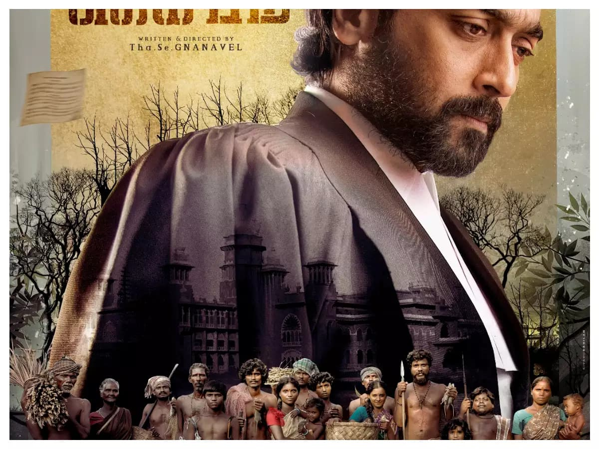
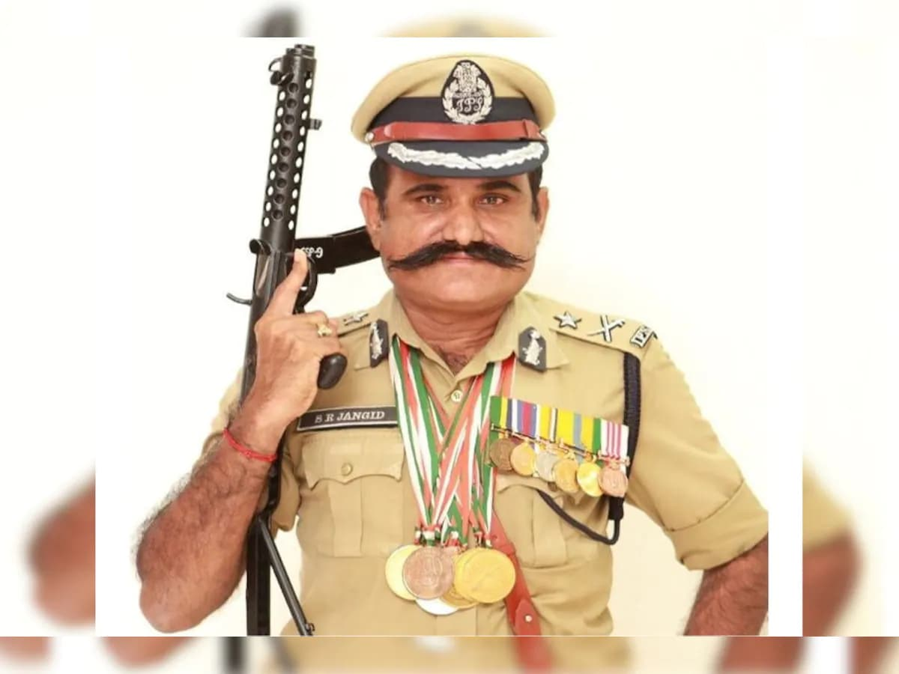
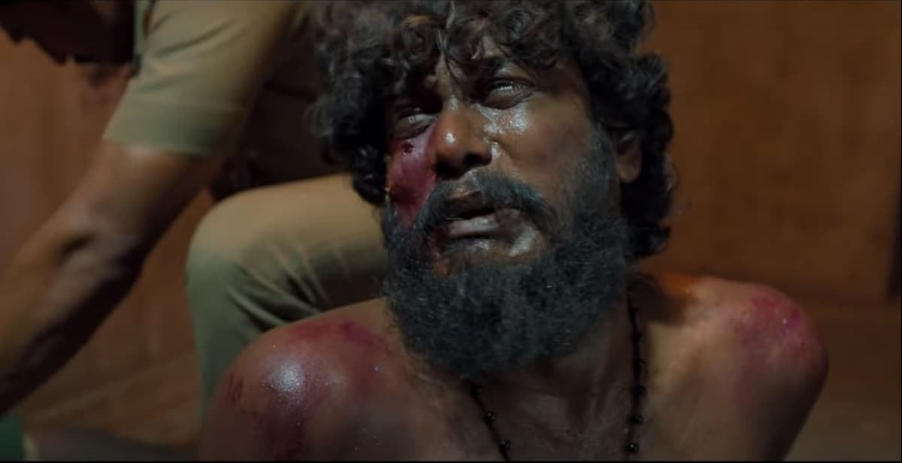

ஜெய் பீம் சினிமா வில் மறைக்க பட்ட சரித்திரம்...
தம்பி நடித்த தீரன் சினிமாவின் உண்மையான தீரன் தான் தான் என்று மார்தட்டி பல விழாகளிலும் விருதுகளிலும் படம் காட்டிய ஜாங்கிட் ips தான் அண்ணன் நடித்த ஜெய் பீம் சினிமாவின் வில்லன் SP என்பது எப்படி மறைக்கப்பட்டது?. அந்த காலகட்டத்தில் அந்த ஜில்லாவின் காவல் துறை SP ஜாங்கிட் டிப்ஸ் தானாம்.
பாதிக்கப்பட்ட பெண் முதலில் புகார் கொடுத்தது இவரிடம் தானாம்.... கொலைகார போலீஸ் சப் இன்ஸ்பெக்டர் மற்றும் சிலரை அந்த அப்பாவிகளை அடித்து உதைத்து, யாரையோ திருப்தி படுத்த, சித்தவதை செய்ததும், பின் சம்பவங்களை திசை திருப்பி, பொய்யான ஒரு அறிக்கையை டிஜிபி க்கு அனுப்பி வழக்கை முடித்து அந்த கயவர்களை காப்பாற்றி யதும் இந்த தீரன் தானாம்.
இப்போது பலரிடம், குறிப்பாக நீதியரசர் ஒருவரிடம் "நான் நடவடிக்கை எடுத்து இருக்க வேண்டும், தவறு செய்து விட்டேன்" என்று பாவ மன்னிப்பு கோரி புலம்புகிறாராம்.
இந்த சினிமாவை பார்த்து பொதுவான குற்ற உணர்ச்சியில் அந்த குடும்பத்துக்கு ஏதாவது உதவி செய்திட வேண்டும் என்று முயற்சிக்கும் எத்தனையோ காவலர்களும், அதிகாரிகளும் வெளிவரும் போது உண்மையான குற்றவாளி யான தீரன் எங்கே ஒளிந்து கொண்டு இருக்கிறார்??? மனசாட்சிக்கு பயந்து அந்த குடும்பத்திடமும், ஒட்டு மொத்த காவல் துறையிடம் மன்னிப்பு கோருவாரா????? இல்லை வழக்கம் போல் தன் சுய பெருமையை தம்பட்டம் அடித்து ஒளி நாடாக்கள் வெளியிடுவாரா????.?
கீழ் மட்ட அதிகாரிகள் தவறு செய்தால் தண்டனை, ips அதிகாரி தவறு செய்தால் பதக்கம் என்ற தமிழ்நாடு காவல் துறையின் கருப்பு வரலாற்றிக்கு இது இன்னொரு உதாரணம்.